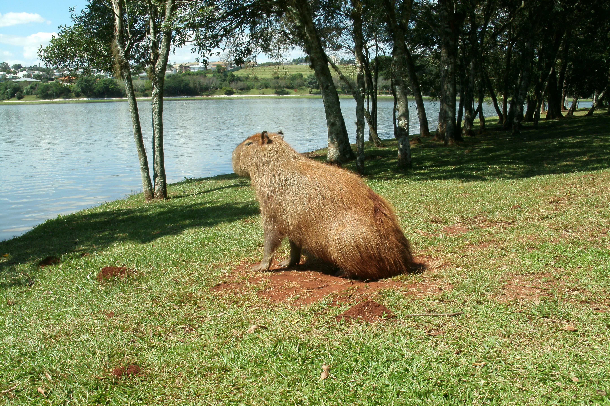

Sobre a Capivara
A capivara é um animal típico da América do Sul, muito comum no Brasil. Ela vive perto de rios e lagos e é conhecida por seu comportamento calmo.

Curiosidades
- Capivaras são animais sociais e vivem em grupos.
- Elas podem nadar muito bem.
- São herbívoras e adoram comer capim.
